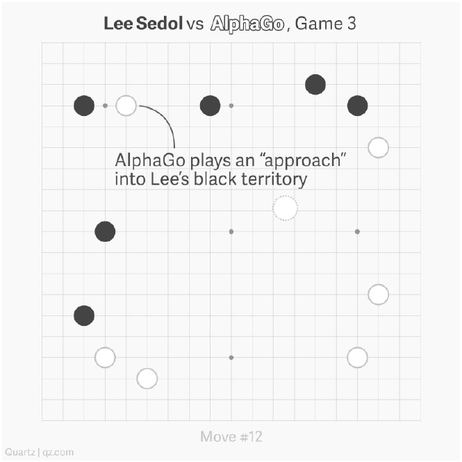
\(\mathcal{M} = \langle \mathcal{S}, \mathcal{A}, r, T, \mu, H/\gamma \rangle\)
Finite-horizon: \(V_h^\pi, Q_h^\pi\) with \(\sum_{t=h}^{H-1}\) instead.
Dynamic programming via the Bellman recursion:
TD update
Deep version
Direct policy optimization:
Policy gradient
PG update (→ natural PG, soft actor-critic, …)
Three instantiations of the same loop — differing only in the model class:
With a given model, we have efficient solutions & elegant analysis.
| Modeling | Exploration | Planning | |
|---|---|---|---|
| Model-free (deep) | ✓ | ✗ | ✗ |
| LQR | ✗ | ✓ | ✓ |
| Deep MBRL / WM | ✓ | ✗ | ✗ |
| Spectral Rep. RL | ✓ | ✓ | ✓ |
Stochastic nonlinear control
MDP reformulation \(\mathcal{M} = \langle\mathcal{S},\mathcal{A},r,T,\mu,H\rangle\)
Transition and reward factorize with \(\phi(s,a)\):
Integration representable:
Q-function is linearly representable:
Given an arbitrary bounded nonlinear \(f\), construct \(\phi(s,a)\) for value functions; then optimize by linear dynamic programming in the obtained space.
Ren et al., CDC 2023 / IEEE TAC 2025
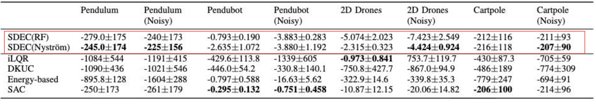
SDEC (random-feature / Nyström spectral dynamics embedding) vs. iLQR, DKUC, energy-based, SAC.
Could we do better and avoid these limitations?
Generalize: learn the factorization directly instead of fixing the kernel.
The MLE of \(T\) under this constraint is intractable — four tractable surrogates follow.
A contrastive loss as a tractable alternative to the MLE:
The objective leads to the solution
Zhang, Ren et al., ICML 2022 (CTRL)
SVD as a tractable alternative to the MLE:
SVD decomposition
Ren, Zhang et al., ICLR 2023 (SPEDE)
Evidence lower bound (ELBO)
Ren, Xiao et al., ICLR 2023 (LV-Rep)
Connect the diffusion model with a spectral decomposition of the MDP:
Score-based representation learning
Shribak et al., NeurIPS 2024 (Diff-SR)
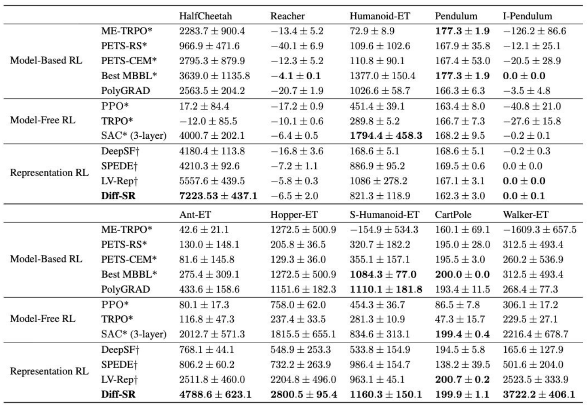
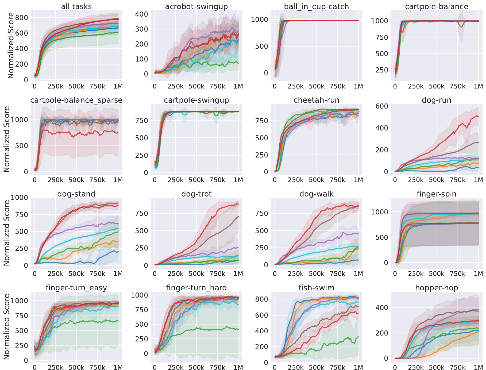
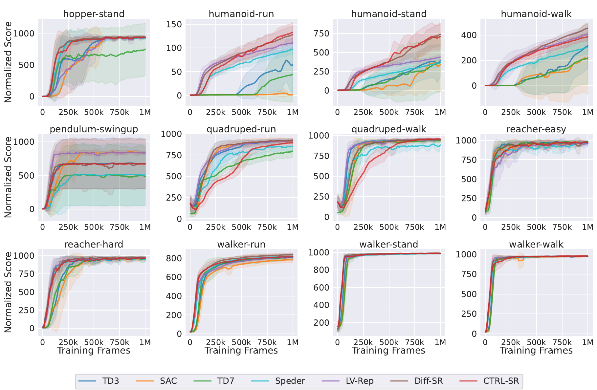
Same tuned TD3 backbone, fixed hyperparameters: Speder · linear / spectral contrastiveLV-Rep · latent variable / ELBODiff-SR · EBM / score matchingCTRL-SR · EBM / ranking perturbed NCE vs. TD3, SAC, TD7. Energy-based reps lead, especially on dog-* and humanoid-*.
Gao, Sun, Li, Schuurmans, Dai, 2025 (arXiv:2512.15036), Fig. 4 · first panel = average over 27 tasks
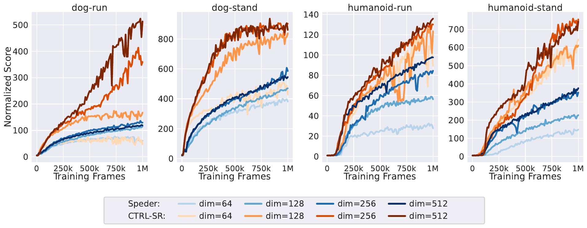
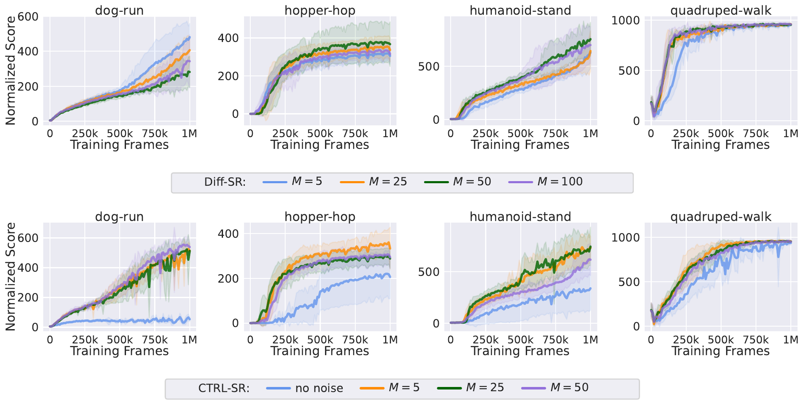
Robust to the noise magnitude — but CTRL-SR collapses without noise: perturbation stabilizes contrastive learning.
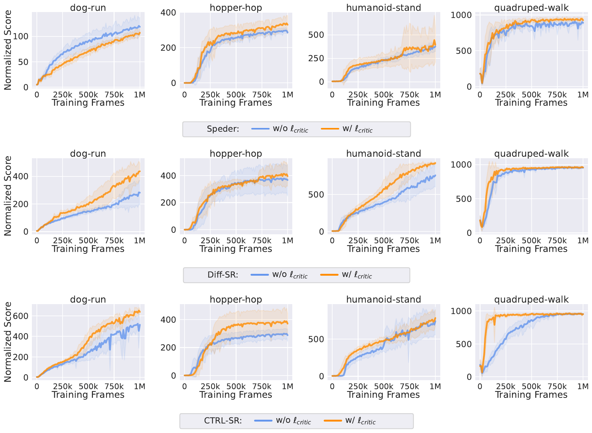
Finite-dim truncation can drop Q-relevant directions; using the rep objective as a regularizer on top of the critic loss helps uniformly.
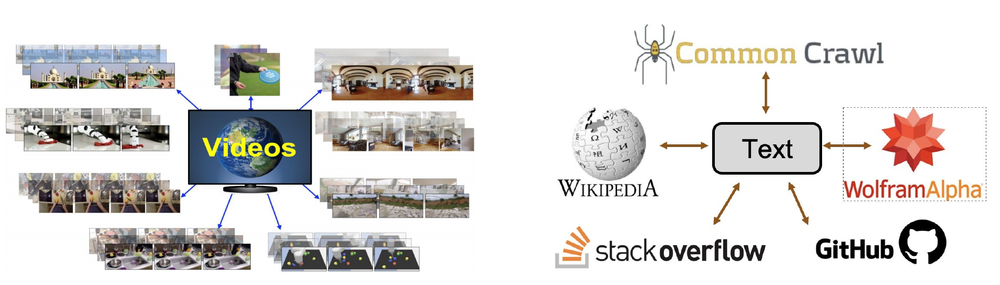
…but no complete state information.
\(\mathcal{P} = \langle\mathcal{S},\mathcal{A},\mathcal{O},r,H,\rho_0,T,O\rangle\)
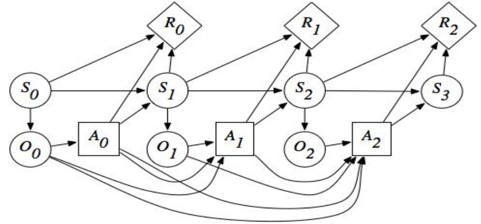
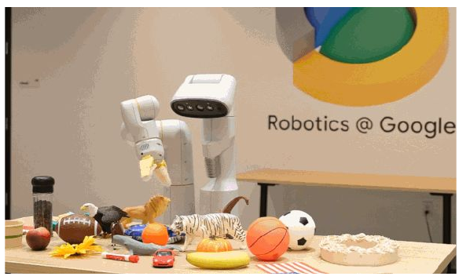
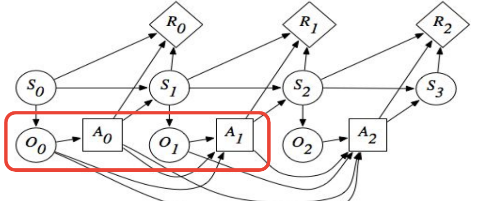
The \(L\)-step window is a sufficient statistic for the state — e.g. frame stacking in visual RL.
\(L\)-decodability lets the value live on the window \(x_t\) — an \(L\)-step Bellman equation:
A moment-matching policy \(\tilde\pi\), conditioned only on \((x_t,a_t)\), removes the intermediate steps.
Spectrally decompose the \(L\)-step transition and reward:
| Formulation | Representation | Objective on windows \((x_t,a_t)\to o_{t+1:t+L}\) |
|---|---|---|
| Linear | \(\phi_{\text{Linear}}(x_t,a_t)\) | Spectral contrastive: \(-2\,\mathbb{E}\bigl[\phi(x_t,a_t)^\top\nu(o_{t+1:t+L})\bigr] + \mathbb{E}_{p\otimes p}\bigl[(\phi^\top\nu)^2\bigr]\) |
| Latent variable | \(\phi_{\text{LV}} = p(z|x_t,a_t)\) | Multi-step ELBO; predicting single frames as a cheaper approximation |
| Energy-based | \(\phi_{\text{EBM}}\) via random features of \(\exp(\psi^\top\upsilon)\) | Score matching, or NCE with \(\phi(o_{t-L+1:t},a_t)\) vs. \(\nu(o_{t+1:t+L})\) on \(L\) consecutive frames |
e.g. the latent-variable instance — multi-step ELBO:
Gao, Sun, Li, Schuurmans, Dai, 2025 (arXiv:2512.15036), Sec. 6 · Zhang et al., ICML 2024
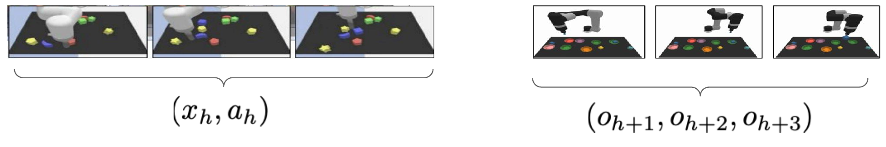
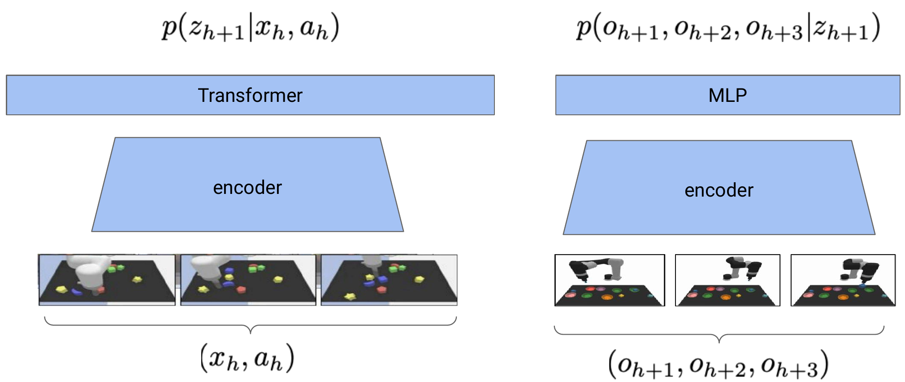
Latent-variable instance: \(p(z_{h+1}|x_h,a_h)\) = Transformer over the encoded history · \(p(o_{h+1:h+3}|z_{h+1})\): MLP over the encoded future.
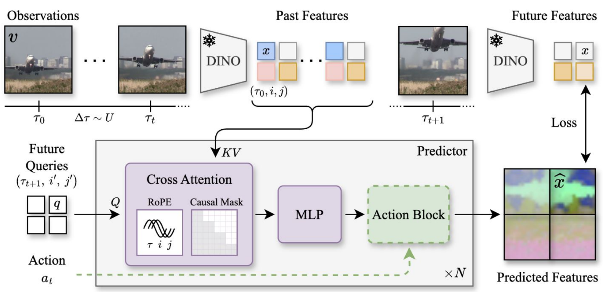
Frozen DINO encoder for past & future features; action-conditioned predictor trained on future-feature loss.
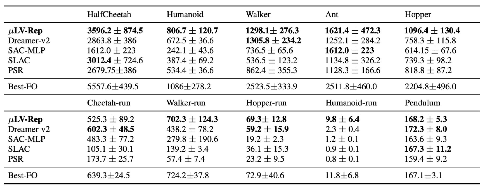
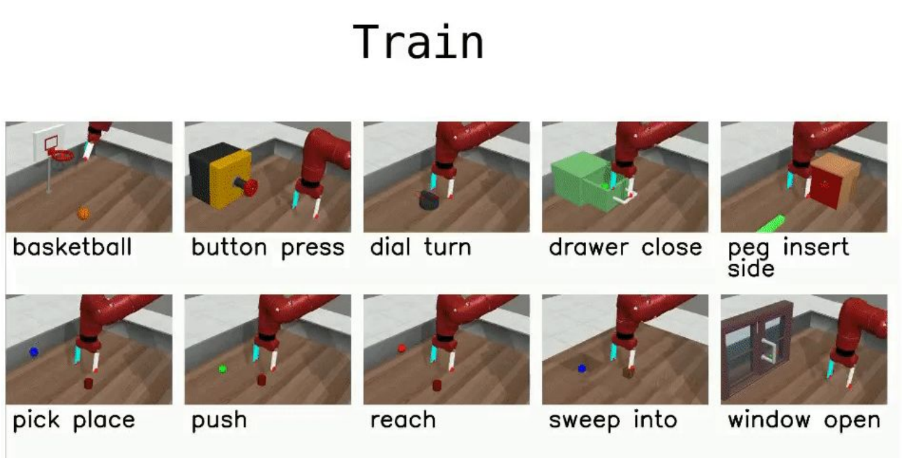
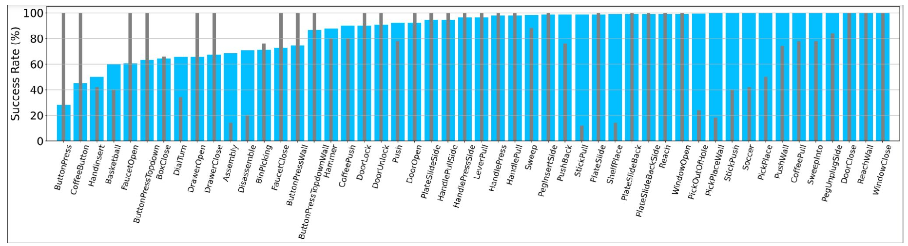
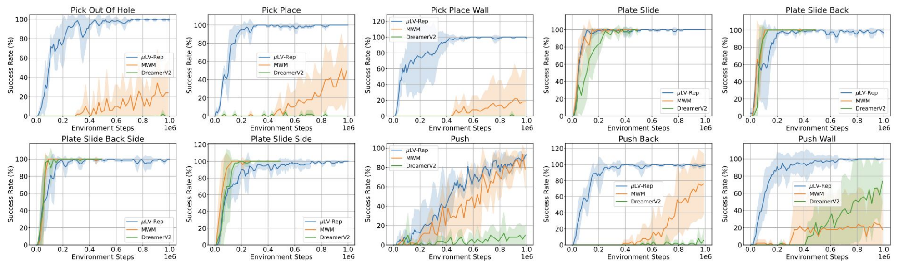
μLV-Rep vs. MWM and DreamerV2 on Meta-World.
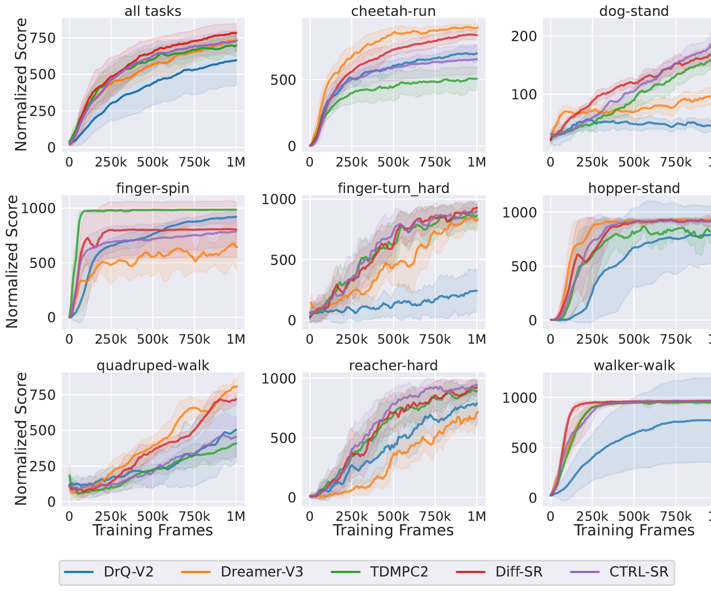
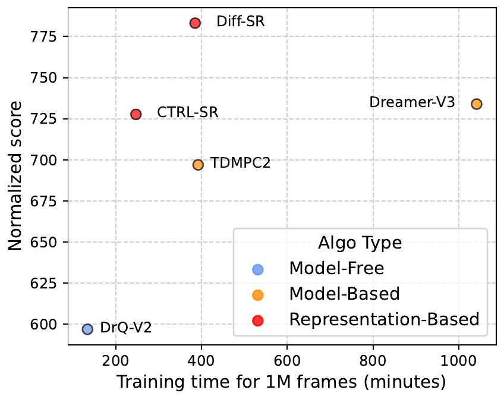
Gao et al., 2025 (arXiv:2512.15036), Figs. 5–6
Collaborators: Chenxiao Gao, Tongzheng Ren, Chenjun Xiao, Tianjun Zhang, Haitong Ma, Zhaolin Ren, Lisa Lee, Sherry Yang, Sujay Sanghavi, Na Li, Csaba Szepesvári, Dale Schuurmans, and many more.
| Representation | Decomposed dynamics |
|---|---|
| Successor feature | \(\texttt{svd}\bigl((I-\gamma P^\pi)^{-1}\bigr)\) |
| Proto-value function | \(\texttt{eig}\bigl(\Lambda P^\pi + (P^\pi)^\top\Lambda\bigr)\) |
| Krylov basis | \(\bigl\{(P^\pi)^i r\bigr\}_{i=1}^{k}\) |
| Spectral state-aggregation | \(\texttt{svd}(P^\pi)\) |